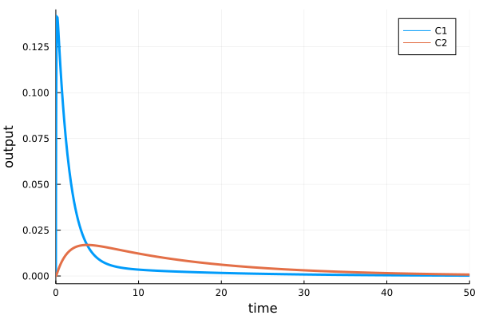

Scenario. Simulation
Working example
As an example we will use a simple two-compartment pharmacokinetic model stored in a single .heta file. It is expected that the model code will be placed into "index.heta" file located in the working directory.
The heta model file can be downloaded here: index.heta
// Compartments
Vol0 @Compartment .= 1;
Vol1 @Compartment .= 6.3;
Vol2 @Compartment .= 10.6;
// Species
A0 @Species {compartment: Vol0, isAmount: true, output: true} .= 0;
C1 @Species {compartment: Vol1, output: true} .= 0;
C2 @Species {compartment: Vol2, output: true} .= 0;
// Reactions
v_abs @Reaction {actors: A0 = C1} := kabs * A0;
v_el @Reaction {actors: C1 =} := Vol1 * (kel * C1); // Vol1 * (kmax * C1 / (Km + C1));
v_distr @Reaction {actors: C1 = C2} := Q * (C1 - C2);
// Parameters
dose @Const = 20;
kabs @Const = 20;
kel @Const = 0.5;
Q @Const = 1.0;
// single dose event
sw1 @TimeSwitcher {start: 0};
A0 [sw1]= dose;
// multiple dose event, default off
sw2 @TimeSwitcher {start: 0, period: 24, active: false};
A0 [sw2]= dose;The modeling platform includes only one namespace nameless which is the default one. After loading the model into Julia a single Model with id :nameless is available.
using HetaSimulator, Plots
# create Platform from the project files
# "index.heta" file inside is the default entry point
p = load_platform(".")No declaration file, running with defaults...
[info] Builder initialized in directory "Y:\HetaSimulator.jl\docs\src\tutorial\sim-files".
[info] Compilation of module "index.heta" of type "heta"...
[info] Reading module of type "heta" from file "Y:\HetaSimulator.jl\docs\src\tutorial\sim-files\index.heta"...
[info] Setting references in elements, total length 52
[info] Checking for circular references in Records.
[warn] Units checking skipped. To turn it on set "unitsCheck: true" in declaration.
[info] Checking unit's terms.
[warn] "Julia only" mode
[info] Exporting to "Y:\HetaSimulator.jl\docs\src\tutorial\sim-files\_julia" of format "Julia"...
Compilation OK!
Loading platform... OK!
Platform with 1 model(s), 0 scenario(s), 0 measurement(s)
Models: nameless
Scenarios: # get the default model
model = models(p)[:nameless]Model contains 4 constant(s), 9 record(s), 2 switcher(s).
Constants (model-level parameters): dose, kabs, kel, Q
Records (observables): Vol0, Vol1, Vol2, A0, C1, C2, v_abs, v_el, v_distr
Switchers (events): sw1, sw2Creating scenarios
Scenario in HetaSimulator is a type, which stores a model together with simulation settings like time-range, output variables, parameters values, active or inactive events, etc.
The scenario-based approach is used to store pre-defined model's options: dose values, experimental measurements, data saving options, initial values etc., which can be applied to one or multiple models. The Scenario also stores Measurement points which are used for parameters estimation and visualization.
Scenario is created from default options passed from the model and user defined options coming from tabular inputs or set manually in the code.
Manual creation of Scenario
Scenario objects can be created directly in Julia code.
This code will create a Scenario for simulating the default model in time range from 0 to 10. Other options will be taken from the default :nameless model:
- output records (observables) will be taken from
Records marked with{output: true}inhetacode. - all switchers (events) will be active if
{active: true}is set inhetacode. - constant (model-level parameters) values will be the same as stated in the heta file.
# minimal scenario
scenario0 = Scenario(model, (0, 10))Scenario for tspan=(0.0, 10.0)
Time range (tspan): (0.0, 10.0)
Parameters: dose, kabs, kel, Q
Number of measurement points: 0The results of simulation can be visualized with plot.
res0 = sim(scenario0)
plot(res0)
We can also update some of the model default options in Scenario. In the next example we update the simulation conditions stored in the Scenario:
- Update the value of parameter
dose = 100. - Use multiple-dose event
sw2instead of a single dose. - Update simulation time span to
(0, 1000). - Output all species:
C1,C2, and variablev_el.
The Scenario can be created with the following code:
# creating scenario
scenario1 = Scenario(
model,
(0.,50.);
parameters = [:dose=>100.],
observables = [:C1, :C2, :v_el]
)
res1 = sim(scenario1)
plot(res1)
To read more about available options see API docs for Scenario function.
It is necessary to mention that scenario0 and scenario1 are not automatically loaded to the Platform p. To add them into p one can use the following syntax.
# push all into `scenarios` dictionary
add_scenarios!(p, [:scn0 => scenario0, :scn1 => scenario1])where :scn0 and :scn are identifiers of the scenarios.
Now the model includes both of them.
pPlatform with 1 model(s), 2 scenario(s), 0 measurement(s)
Models: nameless
Scenarios: scn0, scn1Import scenarios from CSV tables
The most simple way to populate a platform with scenarios is to create a scenario file in tabular CSV format.
Create file scenarios.csv file inside the working directory with the following content or download it here: scenarios.csv.

The table can be created in Excel, saved as a CSV file and then loaded with the read_scenarios function as a DataFrame.
scenarios_df = read_scenarios("scenarios.csv")4×4 DataFrame
Row │ id parameters.dose events_active.sw1 events_active.sw2
│ Symbol Int64 Bool Bool
─────┼────────────────────────────────────────────────────────────────────
1 │ dose_1 1 true false
2 │ dose_10 10 true false
3 │ dose_100 100 true false
4 │ multiple_15 15 false trueThe function reads the content of CSV file, checks if all the components are present in the model and stores the content in scenarios_df variable of DataFrame type. CSV files can be created with any other tool. User can also load tables from XLSX files using the same syntax.
The DataFrame describing a Scenario should be loaded into the Platform object.
add_scenarios!(p, scenarios_df)As we can see all 4 scenarios from the table have been added.
pPlatform with 1 model(s), 6 scenario(s), 0 measurement(s)
Models: nameless
Scenarios: scn0, scn1, dose_1, dose_10, dose_100, multiple_15The particular scenario loaded directly into Platform can be obtained using the following syntax.
scenario2 = scenarios(p)[:dose_1]Scenario for tspan=(0.0, 50.0)
Time range (tspan): (0.0, 50.0)
Parameters: dose, kabs, kel, Q
Number of measurement points: 0See more about scenario tables in tabular CSV format.
Single scenario simulations
The base sim method is applied to a Scenario object. This object can be created directly using Scenario constructor or taken from the Platform object.
The result of sim function execution is the solution of the relevant ODE system with parameters (1) stored as defaults in the Model, (2) overwritten in the Scenario object and (3) overwritten by passing parameters keyword arguments to sim function.
res2 = sim(scenario2)315x3 SimResult with status :Success.
Solution status: Success
Time points (times): 0.0, 0.0, 0.0, 4.999950000250002e-7, 5.499945000275002e-6, 5.549944500277502e-5, 0.0005554944450277752, 0.0031405418644452152, 0.007928302918050478, 0.014985582147596817, ...
Observables (outputs): C1, C2, v_el
Parameters:sim method applied to a single Scenario returns an object of HetaSimulator.SimResult type. The method supports additional keyword arguments which can set the integration method, solver options, etc. For more information see sim
The results can be visualized using plot function.
# plot all
plot(res2)
The figure displays all simulated points and all output variables declared in the observables of the scenario. One can select the observables to display. One can use the additional yscale, ylim and other Plots keyword arguments to change how the results are displayed.
# plot C1, C2
plot(res2, vars = [:C1, :C2])
The results can be transformed into a DataFrame object for further analysis and saving.
# for all observables
res_df = DataFrame(res1)315×5 DataFrame
Row │ t C1 C2 v_el scope
│ Float64 Float64 Float64 Float64 Symbol
─────┼──────────────────────────────────────────────────────────────
1 │ 0.0 0.0 0.0 0.0 start_
2 │ 0.0 0.0 0.0 0.0 ode_
3 │ 0.0 0.0 0.0 0.0 sw2
4 │ 4.99995e-7 0.000158728 3.74355e-12 0.000499992 ode_
⋮ │ ⋮ ⋮ ⋮ ⋮ ⋮
312 │ 49.4347 6.63602 1.77171 20.9035 ode_
313 │ 49.6571 5.79124 1.86371 18.2424 ode_
314 │ 49.8827 5.05502 1.93842 15.9233 ode_
315 │ 50.0 4.71407 1.97083 14.8493 ode_
307 rows omittedAs in plot method one can select what observables to put into the DataFrame by the optional vars argument.
# for C1, C2
res_df = DataFrame(res1, vars = [:C1, :C2])To save the table the CSV format can be used.
using CSV
# save to file
CSV.write("export_df.csv", res_df)Multiple scenario simulations
One can simulate multiple scenarios simultaneously. sim can be applied to all or selected Scenarios in a platform.
# all scenarios
res_mult = sim(p)Progress: 100%[==================================================] Time: 0:00:01
6-element Vector{Pair{Symbol, SimResult}}
:scn0 => 84x3 SimResult with status :Success.
:scn1 => 315x3 SimResult with status :Success.
:dose_1 => 81x3 SimResult with status :Success.
:dose_10 => 100x3 SimResult with status :Success.
:dose_100 => 124x3 SimResult with status :Success.
:multiple_15 => 227x3 SimResult with status :Success.The result of sim method applied to a platform will be a Vector{Pair{Symbol,SimResult}} type with symbolic scenario identifiers corresponding to simulation results. To obtain the particular simulation result one can use numerical or symbol indexing.
# to get 2d result
res_mult[2][2]315x3 SimResult with status :Success.
Solution status: Success
Time points (times): 0.0, 0.0, 0.0, 4.999950000250002e-7, 5.499945000275002e-6, 5.549944500277502e-5, 0.0005554944450277752, 0.0031405418644452152, 0.007928302918050478, 0.014985582147596817, ...
Observables (outputs): C1, C2, v_el
Parameters: # get results for multiple_15 Scenario
res_mult[:multiple_15][2]227x3 SimResult with status :Success.
Solution status: Success
Time points (times): 0.0, 0.0, 0.0, 3.3331111185190124e-6, 3.666422230370913e-5, 0.00036997533415561033, 0.003174221862346261, 0.008946283182509052, 0.01702472658406691, 0.028016975164716275, ...
Observables (outputs): A0, C1, C2
Parameters: To simulate only the selected scenarios from the Platform one can use scenarios argument.
res_selected = sim(p, scenarios = [:dose_1, :dose_10, :dose_100])The results of multiple simulations can be visualized all together using plot method.
# plot everything
plot(res_selected, yscale=:log10, ylims=(1e-3,1e2))
The generated figure includes all scenarios titled with scenario identifier. The additional keyword arguments as vars and plot options can be used in the plot function as well.
sim results for multiple scenarios can be converted into DataFrame.
# convert everything into DataFrame
res_selected_df = DataFrame(res_selected)
CSV.write("res_selected_df.csv", res_selected_df)Final remarks
A typical workflow for simulation of a modeling platforms in HetaSimulator.jl consists of the following steps:
Load heta-based models into the
Platformobject;Create scenarios using
Scenarioconstructor or from CSV tables and add them to thePlatform;Run
simmethod with the whole platform or with the selected scenarios;Display results with
plotor convert them intoDataFrame.ModelandScenarioobjects are "immutable". This means a user cannot update their parts directly. User can only create newScenarios and applyadd_scenarios!method using the same identifiers. This replaces the previously created scenarios with the same ids.To update a model structure one should include changes into the
hetamodel code and repeat all the steps.In many cased Julia chain syntax can be useful. The following code creates the default scenario, runs simulation and plots the result - all in one line.
Scenario(models(p)[:nameless], (0, 100)) |> sim |> plotplotmethod forSimResultgives only the default visualization. For more complicated visualization one can transform results into aDataFrameand plot them manually.For multiple simulations of the Monte-Carlo type one should use
mcmethod instead ofsimmethod.Scenariois not the same as single simulation task in Monte-Carlo.